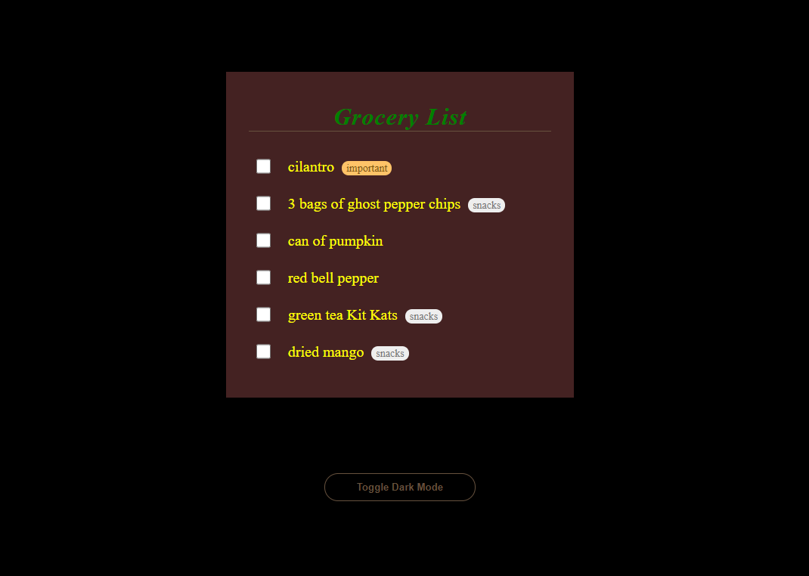

This lab will get us more familiar with making JavaScript interact with elements on the webpage.
Throughout the lab, it might help to refer back to this week's slides if you'd like to revisit a concept from lecture.
Assignment
We have provided you with the backbone for this lab. You can download the assignment file here:
If you open the provided
starter index.html in your browser, it should look like
this:

Our goal is to add functionality to the "Toggle Dark Mode" button.
Part 1: Think about this in English
Recall this lecture slide content:

So think about this dark mode feature. We can frame this as:
When the user clicks on the "Toggle Dark Mode" button, then add or remove some css to the page.
For the css aspect, our dark mode would be a css class that would apply to an element on the page, to change the color scheme. When the css class it not used, then the color scheme would be light, like it is right now.
From the lecture (and the previous hw), we learned that we can use JavaScript to:
- Grab an HTML element on the page. If it has an id, we can call
document.getElementById(), or in general given a tag or id, we can calldocument.querySelector(). - Change the CSS of an element by adding/removing a class. The JS representation of an HTML element is an
object. This object has methods and properties related to the css classes of the
element. Specifically, we can call
elementObject.classList.add()to use JS to add a class to the element,elementObject.classList.remove()to remove a specific class, andelementObject.classList.toggle()will toggle a class name for us.
Example: document.getElementById("logo") would give you the element object for
the HTML element with id="logo". Let's say you store it in a variable called
logoElement. Then running the code logoElement.classList.add("flipped-logo") would add
the .flipped-logo css class to the html element.
Part 2: Define a function.
-
The starter files already include
script.js. Start by adding the<script>tag to the bottom ofindex.html, right before</body>, so the webpage knows where to find the js file. We put it at the bottom so that all of the HTML loads on the page before running any js code. -
Our goal: define a function named
toggleTheme(). The function should take no parameters, and should not return anything. When the function is run, it should:- Identify the
<body>element of the page - Toggle
.dark-modecss class on<body>
- Identify the
-
Now that you've defined the function, let's test the function. On the grocery list page, open
the console and call the function:
toggleTheme(). The css changes should happen! The designer did not think through the dark mode theme very well, so the existing css will make the page look like this:
Part 3: Connect the function to the button.
If your function works by manually calling it in the console, then let's hook it up to the button now.
Our goal: Use JS to get the toggle button element, and store it in a variable with a reasonable name.
Once you've done that, add the following line of code, which tells the browser: when the button is clicked on,
call the toggleTheme function.
buttonVariable.onclick = toggleTheme;
Part 4: Make it pretty!
As you've noticed, the dark mode theme is rather harsh on the eyes. At the bottom of style.css,
write some nice css to improve the color scheme. This is actually very important; we spent effort implementing
the toggle functionality, but this feature is not worth using until the color scheme is good! Refer to the Material Design documentation on
dark themes, especially the Properties and UI Application sections.
Submission
Submit your files to your GitHub Submission Repository by copying all the files inside the "lab8-starter" folder into the lab8 folder of your submission repository (replace the index.html originally in it). In your terminal, from your GitHub Submission Repository, run the following Git commands:
- git add -A
- git commit -m 'finished lab8'
- git push
This assignment is due Monday, April 22nd at 7:00PM PDT.